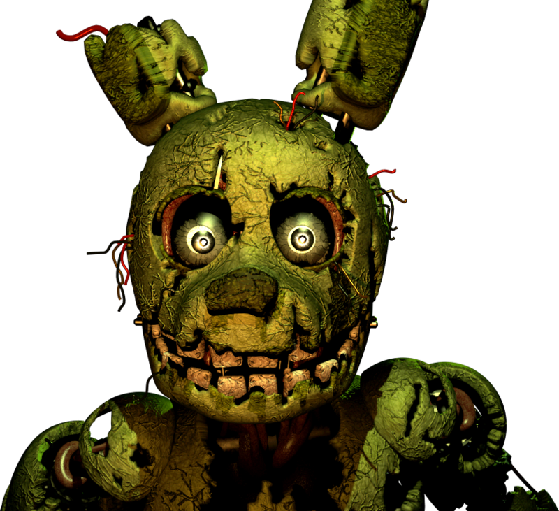

Tema: FNAF
que es la mordida del 87
La Mordida del '87 o El Mordisco del '87 (The Bite of 87 en inglés) fue un incidente sucedido en Freddy Fazbear's Pizza alrededor del año 1987, en el que un animatrónico no identificado (debido a que su nombre nunca ha sido mencionado) mordió violentamente a una persona, provocándole así que perdiera su lóbulo frontal, pero a pesar de esto, sobrevivió al incidente
1. quien es william
Se desconoce la verdadera apariencia física de William, ya que solo se lo ha visto en los minijuegos, donde se lo representa como un sprite de color morado del tamaño y la forma de un hombre adulto. Este sprite cambia ligeramente entre cada entrega. Su boca casi siempre parece tener la forma de una alargada sádica sonrisa. Se ve que William tiene la barbilla hendida fuera de los minijuegos. No es hasta Five Nights at Freddy's 3 que conserva una apariencia semiconsistente, aunque infrautilizada, aunque tiene ojos expresivos y una boca que transmite su estado emocional.
mas de esta información en esta pagina:


2. Scott Cawthon
Scott Cawthon había desarrollado videojuegos largos antes de Five Nights at Freddy's. El 19 de marzo de 2007
mas de esta información en esta pagina: